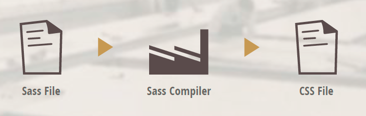
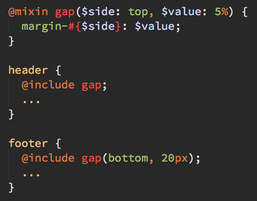
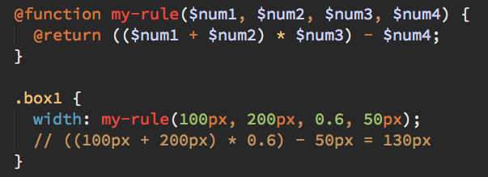

台中前端社群
Taichung Frontend Group
Sass - Syntactically Awesome Style Sheets
擁有超人般力量的CSS
黃竹藝
- a.k.a Chuyi Huang
- ROR開發者
- 朝成為前端工程師的目標前進
什麼是Sass?
- Sass的作者
- Sass的歷史
- Sass的哲學
- Sass的影響
- Sass的未來
什麼是Sass?
Sass的作者Sass的歷史Sass的哲學Sass的影響Sass的未來
因為時間的關係以上通通跳過
Sass是CSS的預處理器
瀏覽器並不認識Sass!
安裝方式
- 在命令列執行: gem install sass
- 使用codekit, compass.app等桌機軟體
- 執行: sass input.sass output.css
- 在瀏覽器上使用"output.css"
參考官方網站: http://sass-lang.com/install
有兩種格式
.sass 與 .scss
官網介紹的特點
- 變數 Variables
- 巢狀 Nesting
- 多檔案 Partials
- 載入 Import
- 混搭 Mixins
- 延伸/繼承 Extend/Inheritance
- 計算 Operators
個人的使用心得 - 管理面
透過Sass讓CSS管理變得超級方便
- 使用 "//" 做為註解，讓註解更簡單
- 透過巢狀的實作使CSS的作用域(Scope)更清楚
- 使用變數減輕管理CSS的痛苦
- 透過import與partials讓CSS能夠分門別類
- 使用延伸(extend)讓CSS碼達到瘦身效果
- 自做mixin讓CSS碼變得可攜與重複使用
個人的使用心得 - 擴充與強化面
大幅擴充並強化既有的CSS能力
- 使用mixin功能吸收高手的內力 Level up!!!
- 計算功能與內建函式強化CSS效果
- 以程式邏輯的方式延伸CSS，以directive方式
- 搭配Compass = 拿到CSS的葵花寶典 太誇張了!!!
- 搭配Susy達到語義化的RWD不是夢想
透過巢狀的實作使CSS的作用域(Scope)更清楚
巢狀
更多範例
使用&代表上一層標籤
注意text的使用方式
巢狀不建議超過4層!
變數 Variables
- 使用$符號作為變數，例如: $base_color: #C$0000
- 型別有文字, 數字, 布林值, 單位, 顏色, 多組文字與空值
- 可以同時應用在"鍵"與"值"上
- 需要注意命名的方式
- 透過partial可在多檔案中使用
- 配合mixin發揮強大作用
變數 Variables
老問題 命名很重要!!!
混搭 Mixins
大家應該都這麼幹過...
不麻煩，靠剪貼就解決了啦XDDD
相信我，靠剪貼很快就失控了
混搭 Mixins
將重複使用的部份獨立成為區塊
使用關鍵字 @mixin 與 @include
But...如果你熟CSS，你會...
效率一定比重複使用好！那我用 Mixin 幹嘛?
重複的程式碼可用Mixin處理
但是還是有問題。每個邊框都只能5px...
如果能帶入變數呢?
將Mixin帶入變數
好像開始有點意思了...
Mixin使用預設值

帶入預設值可以統一風格
帶入預設值可避免漏填的錯誤
變數可以用在"鍵"與"值"上
還有還有...
- 把自己常用的CSS碼轉成mixin，加快開發速度
- 將常用的mixin獨立成一個檔案，跟著不同專案走
- 開始上網找高手做好的mixin吧...
Partials與Import
- 使用底線_做為partial檔案的開頭
- 使用@import載入檔案
- partial檔案單純引入不會被compile
- 避免IE8限制CSS選擇器數量(4095)的問題
- IE MUST DIE!!!
Partials與Import
重點來了...
Partials與Import
載入的順序會影響...
透過partials讓Sass就是這麼好管理
延伸 Extend
還記得這張圖嗎?
好像是...呃...忘記了XXDD...
Extend就是拿來延伸區塊的
- 產出的css能夠節省檔案size
- Sass部份分拆text-box1, text-box2讓程式碼更清楚
- 好懂的給人看，難懂的給機器看
注意Extend的巢狀陷阱
好像沒有Z > B?
用%符號 + 名稱處理Extend巢狀陷阱
避免重複的CSS碼
計算 Operators
- 加, 減, 乘, 除, 商統統都有
- 可搭配函數使用
- 不同單位不可計算
- 顏色可以計算
- 需要計算機?使用sass互動模式(輸入sass -i)
數字計算 Operators
數字計算的函數
Sass內建好用的函數，提高數學計算的可能性
- round($number) => 四捨五入
- ceil($number) => 無條件進位
- floor($number) => 無條件去小數位
- abs($number) => 絕對值
- percentage($number) => 數值百分位化
- min($collection) => 一堆值中最小的
- max($collection) => 一堆值中最大的
數字計算函數範例
可使用sass的互動模式熟悉使用方法
文字組合 Operators
應該沒有人會這麼做吧?
顏色計算 Operators
顏色函數範例
顏色計算以$color: #333333為例
| darken($color, 10%) | ||
| lighten($color, 20%) | ||
| saturate($color, 30%) | ||
| desaturate(#678ad8, 40%) | ||
| invert($color) | ||
| grayscale(#ff0000) | ||
| complement(#ffff00) |
邏輯指示 Directive
最後一個了, YES!
- @function
- @if...@else...@return
- @each
- @for 與 @while
- 比較符號: == >= <= !=...
我為什麼要在CSS檔案中寫程式?
如果我能夠在CSS裡寫程式，我可以...
- 以變數作為開關
- 將計算行為公式化
- 使用迴圈節省工作
- 強化mixin的使用
最重要還是要回歸初衷 - 好管理
以變數作為開關
把可能會用的功能先做好，等客戶要求時再打開XXDD
將計算行為公式化
減少腦筋打結與手殘打錯的機會
使用迴圈節省工作
這樣更好管理
Directive讓mixin更強大
是不是該將程式的觀念帶入管理CSS? 早該這麼做了!!!
是不是該談談.sass了?
- 還記得Sass有兩種模式嗎?
- 將程式邏輯放進CSS中很酷，但是很亂
- 進階到Sass才能有效管理
- 還是老話一句。好管理才是重點
finish...講完了^^
Wait...還有還有~
Compass
- 大量整理好的Mixin包，例如: CSS3的mixin
- 提供超好用function，例如: image-width()
- 使用CSS Sprite減少request次數
- 監控Sass檔案變化，直接轉成CSS
- 結合高手寫好的工具包，例如: sassy buttons
Compass
Compass
Compass
Compass
Susy
- 讓你寫出屬於自己定義的RWD框架
- 寫出純語義的HTML架構不是夢
- 靈活的grid系統，讓你的layout與衆不同
- 用SUSY讓你覺得很潮
Bootstrap的問題
Susy的語義形式
工商服務
前端開發課程 - Sass實戰教學 (台中場)
講師: 廖洧杰 / 王志誠
時間: (7/5 與 7/12 9:00 am~17:00 pm)
地點: 北訊電腦 / 台中市中區中山路33號
報名網址: http://myerstone.kktix.cc/events/6d0c37e2-7aa43c
參考資料
Thank You